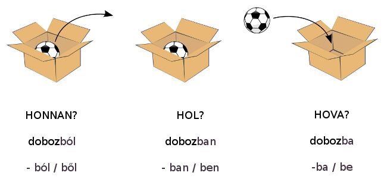
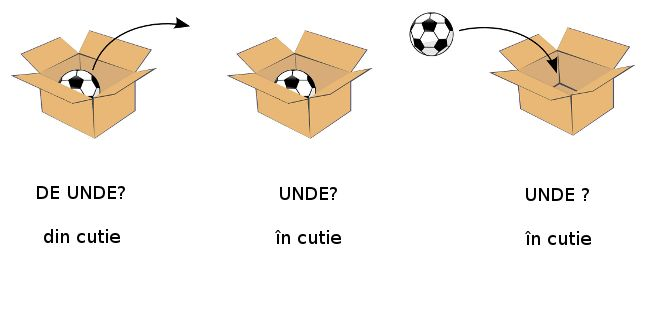
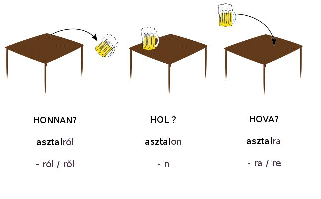
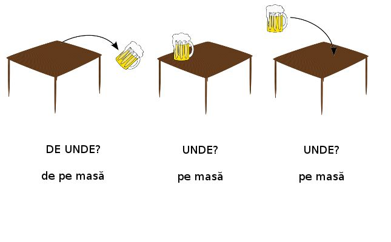
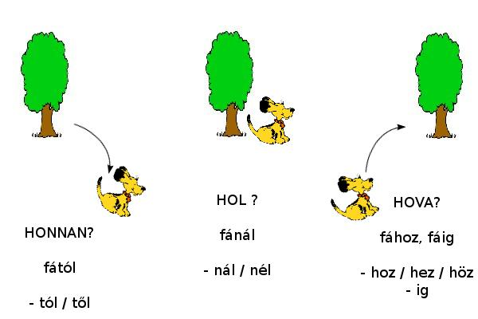
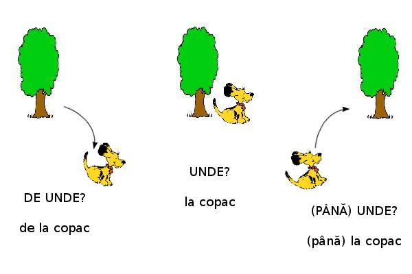

Primii pași · Lecția 007
Unde mergi?
Vorbește despre destinații. Observă terminațiile care răspund la întrebarea „unde mergi?”.
În această pagină
- 1. Sufixe cu înțelesul "în" și "din".
- 2. Sufixe cu înțelesul aproximativ "pe" și "de pe".
- 3. Sufixe cu înțelesul aproximativ "la", "de la" și "până la".
- Exerciții
- 1. Întrebați personajele din imagine cine sunt și de unde vin sau unde merg, și răspundeți în numele lor (presupunem, ca și în exercițiile trecute că și patrupezii pot vorbi). Folosiți un dicționar dacă trebuie. Puteți găsi mai multe dicționare aici .
- 2. Completați cuvintele cu sufixele potrivite, iar întrebările cu cuvintele interogative potrivite. Atenție la schimbarea a > á!
- 3. Folosiți sufixul corect în următoarele expresii.
- Întrebări
În această lecție învățăm despre relații în spațiu exprimate cu ajutorul sufixelor. După aceea învățăm câteva verbe simple și conjugarea lor la prezent. Multe dintre aceste concepte le-am întâlnit deja în exemplele din lecțiile trecute, dar acum le vom explica mai detaliat, ele fiind foarte utile și des folosite. Această lecție este puțin mai lungă ca de obicei, poate e mai bine s-o parcurgeți în două bucăți.
Să începem cu relațiile în spațiu. Ne referim la acele relații care în limba română sunt
exprimate cu prepozițiile "la", "pe", "din", "în" etc. În maghiară în loc de prepoziții
folosim ori postpoziții scrise separat (mellett "lângă",
alatt "sub" etc. așa cum am învățat în
lecția 004) ori sufixe alipite
substantivului. Poate că ați observat deja câteva dintre aceste sufixe în lecțiile
trecute:
| A kertben virágok vannak. | În grădină sunt flori. |
În acest exemplu substantivului kert "grădină" i-am alipit sufixul -ben, ca să obținem kertben "în grădină".
Sufixele sunt foarte numeroase (chiar și numai cele care se referă la relații în
spațiu), așa că încercăm să le prezentăm într-o ordine logică. Trebuie să începem însă
cu o explicație puțin mai filozofică:
În maghiară există un sistem triplu de exprimare a locului, pornind de la trei întrebări
de bază care se pot pune pentru un complement de loc:
| Honnan? "De unde?" |
| Hol? "Unde?" |
| Hova? "Încotro?" |
În limba română putem folosi "unde" și pentru cazul al treilea, ca în titlul acestei lecții: "Unde mergi?". În maghiară însă hol și hova nu se pot interschimba. Dacă verbul exprimă deplasarea către un anumit loc, întrebarea este hova?, iar dacă verbul nu exprimă nicio deplasare, complementul răspunde la întrebarea hol?. Să învățăm pe rând acum trei grupuri de câte trei sufixe care exprimă locul:
1. Sufixe cu înțelesul "în" și "din".
Unul din sufixe exprimă situația de a se afla în interiorul unui obiect, altul de a veni din interiorul obiectului, iarăși altul de a se îndrepta către interiorul acestuia.

Vezi ilustrația în română

După cum observați, avem două forme diferite pentru fiecare sufix. Alegerea între ele se face conform regulii armoniei vocalice, învățată în lecția 005. Dacă în cuvântul de bază sunt numai vocale posterioare (a, á, o, ó, u, ú), sau vocale posterioare și vocale anterioare (e, é, i, í, ö, ő, ü, ű), folosim prima formă, dacă sunt numai vocale anterioare, folosim varianta a doua.
Astfel spunem:
- de la cuvântul de bază doboz "cutie": dobozból "din cutie", dobozban "în cutie" (în interiorul acesteia, fără deplasare spre acel interior), dobozba "în cutie" (spre interiorul acesteia), dar
- de la cuvântul de bază erdő "pădure": erdőből "din pădure", erdőben "în pădure", erdőbe "în pădure" (spre interiorul acesteia).
Avem nevoie acum de cel puțin două verbe pentru a construi niște exemple:
| (én) jövök | (eu) vin |
| (én) megyek | (eu) merg |
| (te) jössz | (tu) vii |
| (te) mész | (tu) mergi |
|
Honnan jössz? - Az iskolából (jövök). - A városból. - Az erdőből. - Amerikából. - Az üzletből. |
De unde vii? - (Vin) de la școală (lit. "din școală"). - Din oraș. - Din pădure. - Din America. - Din magazin. |
Ne putem da seama ușor care este cuvântul de bază, tăind sufixul
-ból/-ből. Observăm și aici același fenomen ca în cazul sufixului
acuzativului sau al pluralului din lecțiile trecute: dacă cuvântul de bază se termină în
a sau e, această vocală se lungește, devenind
á, respectiv é. Astfel:
iskola -> iskolából
Amerika -> Amerikából.
Să vedem exemple și pentru celelalte direcții:
|
Hol vagy? - Az iskolában (vagyok). - A városban. - Az erdőben. - Romániában. - Az üzletben. |
Unde ești? - (Sunt) la școală (lit. "în școală"). - În oraș. - În pădure. - În România. - În magazin. |
|
Hova mész? - Az iskolába (megyek). - A városba. - Az erdőbe. - Angliába. - Az üzletbe. |
Unde mergi? - (Merg) la școală (lit. în școală). - În oraș. - În pădure. - În Anglia. - În magazin. |
2. Sufixe cu înțelesul aproximativ "pe" și "de pe".
Aceste sufixe exprimă de cele mai multe ori ideea că un obiect se află așezat pe alt obiect, se deplasează / este deplasat ca să fie pe alt obiect sau se deplasează / este deplasat de pe alt obiect.

Vezi ilustrația în română

În cazul lui -ról/-ről și -ra/-re avem două forme, în funcție de armonia vocalică, precum în cazul precedent. În cazul lui -n, avem o situație similară cu -t-ul acuzativului sau -k-ul pluralului: dacă cuvântul se termină în vocală, alipim doar acest n, dacă cuvântul se termină în consoană, avem nevoie și de o vocală de legătură, care se armonizează cu cuvântul de bază (și care de obicei e aceeași ca la plural). Astfel în cazul cuvintelor de bază terminate în consoană, avem trei forme posibile: -on/-en/-ön. Ultima variantă se folosește pentru cuvintele de bază la care cel puțin ultima vocală este ö, ő, ü sau ű.
Exemple:
| Forma de bază | "de pe" | "pe" fără deplasare către acel loc | "pe" cu deplasare spre acel loc |
| mező "câmp" | mezőről "de pe câmp" | mezőn "pe câmp" | mezőre "pe câmp" |
| fa "copac/pom" | fáról "de pe copac" | fán "pe copac" | fára "pe copac" |
| asztal "masă" | asztalról "de pe masă" | asztalon "pe masă" | asztalra "pe masă" |
| tányér "farfurie" | tányérról "de pe farfurie" | tányéron "pe farfurie" | tányérra "pe farfurie" |
| szék "scaun" | székről "de pe scaun" | széken "pe scaun" | székre "pe scaun" |
| fül "ureche" | fülről "de pe ureche" | fülön "pe ureche" | fülre "pe ureche" |
3. Sufixe cu înțelesul aproximativ "la", "de la" și "până la".
Aceste sufixe exprimă de cele mai multe ori ideea că cineva sau ceva se află în apropierea unui obiect sau a unei persoane, se deplasează / este deplasat de la acel obiect sau acea persoană, ori se deplasează / este deplasat ca să ajungă în apropierea acelui obiect sau acelei persoane.

Vezi ilustrația în română

În cazul lui -tól/-től "de la" și -nál/-nél "la" avem două forme, ca de obicei. În cazul lui -hoz/-hez/-höz sunt trei forme și forma cu vocala corectă se alege la fel ca la sufixul -n prezentat mai sus. În termeni tehnici, diferențiem între vocale anterioare rotunjite sau nerotunjite, dar nu trebuie să țineți minte neapărat de această regulă, încercați doar să dezvoltați o intuiție pentru alegerea vocalei care armonizează cel mai bine cu restul cuvântului. Detalii în lecția 005.
Sufixul -ig nu face parte din sistemul triplu de exprimare a locului, deosebindu-se de -hoz/hez/höz prin faptul că exprimă limita deplasării, complementul respectiv răspunzând la întrebarea meddig? "până unde?". Acest sufix are o singură variantă.
Exemple:
|
A kék háztól jövök. Most a fánál vagyok. Az iskoláig megyek. Az ablaknál vagyok. |
Vin de la casa albastră. (lit. De la casa albastră vin.) Acum sunt la copac. Mă duc până la școală. Sunt la fereastră. |
|
- Honnan jössz? - Az orvostól. - Pétertől. |
- De unde vii? - De la medic. - De la Péter. |
|
- Hova mész? - Edithez. - Istvánhoz. - A főnökhöz. - A lányokhoz. - A fiúkhoz. |
- Unde mergi? - La Edit. - La István. - La șef. - La fete. - La băieți. |
Merită menționat că sufixele din acest grup se folosesc și pentru a exprima noțiuni de
timp:
-tól/-től "de la", de exemplu: hattól "de la șase",
két órától "de la ora două"
-ig: ötig "până la cinci", fél négyig "până la trei și
jumătate" (Atenție, nu "patru și jumătate"!);
-hoz/-hez/-höz nu se folosesc când e vorba despre timp, și nici
-nál/-nél. Dacă vrem să spunem că ceva se petrece la un anumit moment,
folosim sufixul -kor, pe care l-am învățat în
lecția 006, și care se folosește numai
referitor la timp, de exemplu: nyolckor "la opt".
Câteodată folosim și -ra/re "pe" când e vorba despre timp, în sensul de "până la", adică similar cu -ig, dar accentuând și mai mult faptul că acțiunea se termină până la momentul respectiv. De exemplu, putem spune Háromra otthon leszek, ca o promisiune de a fi acasă cel târziu la ora trei (otthon "acasă", leszek "voi fi").
Exemplu:
|
- Mikor mész iskolába? - Fél nyolckor. Reggel nyolctól délután kettőig az iskolában vagyok. - Kettőkor jössz az iskolából? - Igen. Kettőig vagyok ott. Kettőkor jövök haza. Fél háromra otthon leszek. |
- Când mergi/pleci la școală (lit. "în școală") - La șapte jumate. De la opt dimineața până la două după-amiază sunt la școală. - La două vii de la școală? - Da. Până la două sunt acolo. La două vin acasă. Până la două jumate voi fi acasă. |
Un cuvânt nou este haza, un adverb mai special, pentru că înseamnă "acasă", dar
este folosit numai cu verbe care exprimă deplasarea spre casă. Astfel,
haza înlocuiește otthonhoz care nu există cu acest înțeles.
Am învățat deci o mulțime de sufixe (mai există multe altele, dar acestea sunt poate cele mai importante). Înainte de exerciții, să mai facem câteva observații:
-
Am spus că primul grup de sufixe corespunde aproximativ prepozițiilor "în" și "din",
al doilea grup prepozițiilor "pe" și "de pe", iar al treilea grup corespunde lui "la"
și "de la" din limba română. Acestea sunt sensurile principale ale sufixelor
prezentate, dar folosirea în practică a celor trei grupuri nu este totdeauna logică.
De exemplu, spunem iskolában (lit. "în școală"), deși în română "la
școală" sună mai bine. În maghiară iskolánál (lit. "la școală") ar însemna "la
clădirea școlii" sau "în apropierea școlii", iar iskolán "pe școală" ar însemna
ceva de genul "pe acoperișul școlii", ca în română.
Uneori alegerea sufixului corect (sau în limba română a prepoziției corecte) nu pare să aibă nicio explicație logică. Astfel, spunem a városban "în oraș", dar a piacon "la piață" (lit. "pe piață"), sau a postán "la poștă" (lit. "pe poștă"), ori az egyetemen "la universitate" (lit. "pe universitate"). Așadar, țineți minte că traducerile de mai sus trebuie tratate cu suspiciune, dar ele sunt corecte suficient de frecvent ca să merite învățate.
În unele cazuri, sunt diferențe subtile de înțeles în funcție de sufixul folosit. Astfel az egyetemről jövök (lit. "vin de pe universitate") înseamnă că am fost la universitate, adică în interiorul clădirii. Expresia az egyetemtől jövök "vin de la universitate" înseamnă că am fost în apropierea universității, de exemplu am stat cu mașina în fața clădirii. Iarăși, forma corectă nu este foarte intuitivă, pentru că în primul caz mai degrabă am folosi "din", însăaz egyetembőlnu are niciun sens. - Unele substantive preferă deci un anumit sufix, iar altele "merg" cu alt sufix. Mai ciudat este în limba maghiară că și numele geografice au astfel de preferințe, în multe cazuri chiar fără nicio explicație logică.
- Majoritatea țărilor primesc -ban/-ben, -ba/-be, -ból/-ből (sens principal "în", "din"), de exemplu Romániában vagyok "sunt în România", Romániából jövök "vin din România", Romániába megyek "mă duc în România", în afară de Magyarország (Magyarországon, Magyarországról "din Ungaria", Magyarországra "în Ungaria") și de țările insulare (Új Zélandon, Új Zélandról, Új Zélandra)
- În cazul localităților, situația este mai complicată. Cele din afara bazinului Carpaților primesc sufixele -ban/-ben, -ba/-be, -ból/-ből, dar pentru cele din bazinul Carpaților nu există regulă. Exemple pentru prima categorie: Bukarestben "în/la București", Párizsba "la Paris" [lit. "în"] (cu deplasare spre acest oraș), Londonból "de la Londra" [lit. "din"]. Exemple pentru a doua categorie: Nagyszebenben "în/la Sibiu", Pozsonyba "la Bratislava" [lit. "în"] (cu deplasare spre), Győrből "de la Győr" [lit. "din"], dar Budapesten "în/la Budapesta" [lit. "pe"], Kolozsvárra "la Cluj" [lit. "pe"] (cu deplasare spre), Újvidékről "de la Novi Sad" [lit. "de pe"]. Aceste reguli țin numai de tradiția locului, așa că nu vă faceți griji, pentru că de multe ori nici maghiarii nu știu forma corectă când vizitează un oraș de care nu au auzit mai devreme.
- În exemplele fiúkhoz "la băieți" și lányokhoz "la fete" de mai sus, vedem că aceste sufixe se pot alipi și substantivelor la plural (care au deja semnul pluralului, k).
- Există unele diferențe între maghiară și română în folosirea articolelor concomitent cu sufixele, respectiv prepozițiile. De exemplu, în română, când se spune "mă duc la fată", nu se folosește articolul hotărât, deși substantivul este simțit ca determinat, în comparație cu "mă duc la o fată", unde substantivul este clar nedeterminat, având articol nehotărât. În maghiară, articolul hotărât este prezent dacă substantivul este simțit ca determinat (a lányhoz megyek "mă duc la fată"), dar articolul nehotărât poate fi omis dacă substantivul este nedeterminat: (egy) lányhoz megyek "mă duc la o fată". La plural, articolul hotărât trebuie folosit în maghiară în cazul unui substantiv determinat: a lányokhoz megyek "merg la fete" (lit. "la fetele"). Fără articol, lányokhoz megyek, înțelesul este "mă duc la niște fete". Sufixele cu înțelesul "la", "de la" se pot folosi și cu nume de persoane, așa cum am văzut în exemple (Péterhez). Aici, evident, nu trebuie niciun articol.
-
Ceea ce am învățat până acum sunt înțelesurile cele mai concrete ale acestor sufixe,
adică relații în spațiu și timp. Ca și prepozițiile în limba română, aceste sufixe se
pot folosi și în sens figurat sau metaforic, sau doar cu alte înțelesuri. Așadar:
fából "din lemn", referindu-se la materialul de fabricație;
a fiúra gondolok "mă gândesc la băiat" (lit. "pe băiat")
Editről beszélek "vorbesc despre Edit" (lit. "de pe Edit")
a gyógyszertől jól vagyok "mă simt bine de la medicament"
Zoli hasonlít Istvánhoz "Zoli seamănă cu István" (lit. "la István")
Toate înțelesurile sufixelor ar fi imposibil de înșiruit, dar de multe ori ele se pot ghici din context cu puțină experiență, și există și similarități cu alte limbi.
Exerciții
(Ca de obicei, rezolvările se pot discuta pe .)
1. Întrebați personajele din imagine cine sunt și de unde vin sau unde merg, și răspundeți în numele lor (presupunem, ca și în exercițiile trecute că și patrupezii pot vorbi). Folosiți un dicționar dacă trebuie. Puteți găsi mai multe dicționare aici.
2. Completați cuvintele cu sufixele potrivite, iar întrebările cu cuvintele interogative potrivite. Atenție la schimbarea a > á!
|
- Mi van az újság____? - Semmi érdekes. |
- Ce este în ziar? - Nimic interesant. |
|
- Mi van a tányér____? - Egy alma. |
- Ce este pe farfurie? - Un măr. |
|
- ____ van a pohár? - Az asztal____. |
- Unde este paharul? - Pe masă. |
|
- ____ jössz? - A piac____ jövök. - És hova mész? - Réka____ megyek. |
- De unde vii? - De la piață [de pe piață] vin. - Și unde mergi? - Mă duc la Réka |
|
- ____ van István? - Ott ül a bicikli____. Most megy iskola____. |
- Unde este István? - Acolo stă pe bicicletă. Acum se duce la școală [în școală]. |
|
- Hol van Anna? - Még ágy____ van. Ma csak tíz____ megy az egyetem____. |
- Unde este Anna? - Încă e în pat. Azi merge doar la zece la universitate [pe universitate]. |
|
- Ez mi? - Képeslap. Papír____ van. - És ez a játék miből van? - Fa____. |
- Asta ce este? - O carte poștală. E din hârtie. - Și această jucărie din ce este? - Din lemn. |
|
- Hol van az autó? Nincs a garázs____? - Nincs, a fa alatt van, az udvar____. |
- Unde e mașina? Nu este în garaj? - Nu (este), e sub copac, în curte [pe curte]. |
3. Folosiți sufixul corect în următoarele expresii.
- fél kilenc____ háromnegyed tíz____ "de la opt și jumătate până la zece fără un sfert"
- reggel____ este____ "de dimineață până seara"
- a ház____ az udvar____ "din casă în curte"
- az erdő____ a mező____ "din pădure pe câmp"
- London____ Párizs____ "de la Londra până la Paris"
- Megyek nagymama____ "Mă duc la bunica"
- apa____ fiú____ "din tată în fiu" (lit. "de pe tată pe fiu")
- fa____ vaskarika lit. "roată de fier făcută din lemn", o zicală pentru ceva imposibil sau absurd. (vas "fier", karika "cerc")
- cseber____ veder____ "din lac în puț" (lit. "din ciubăr în găleată", o zicală pentru situația când ajungem dintr-o situație proastă într-una tot proastă)
- a folyó____ a tenger____ "din râu în mare"
- az asztal____, a tányér____ "pe masă, în farfurie"
- János____ van a labda "Mingea este la János."
- ____ ____ mész? És most ____ vagy? "De unde până unde mergi? Și acum unde ești?"
Ca relaxare să ascultăm un cântec popular de copii. Textul este extrem de simplu și repetitiv. Dacă urmăriți și animația, probabil că o înțelegeți și mai ușor. Observați folosirea sufixelor învățate, precum și cazul acuzativ.
Linkul către videoclip (resursă indisponibilă)
|
Én elmentem a vásárba félpénzzel Én elmentem a vásárba félpénzzel, Tyúkot vettem a vásárban félpénzzel. Tyúkom mondja: kit-rá-kotty, Kárikittyom, édes tyúkom, Mégis van egy félpénzem Én elmentem a vásárba félpénzzel. Kakast vettem a vásárban félpénzzel. Kakas mondja: ... ... Libát vettem ... Disznót vettem ... Lovat vettem ... Tehenet vettem ... Halat vettem ... ... Kárikittyom, édes tyúkom, Elfogyott a félpénzem. |
Am plecat la târg, cu "o jumătate de ban" Am plecat la târg, cu "o jumătate de ban" Am cumpărat o găină la târg, pe "o jumătate de ban", Găina mea spune: cot cot Cot cot, găina mea dragă Totuși mai am "o jumătate de ban" Am plecat la târg, cu "o jumătate de ban" Am cumpărat un cocoș la târg, pe "o jumătate de ban", Cocoșul spune: ... ... Am cumpărat o gâscă ... Am cumpărat un porc ... Am cumpărat un cal ... Am cumpărat o vacă ... Am cumpărat un pește ... ... Cot cot, găina mea dragă Nu mi-a rămas nimic din "jumătatea de ban". |
Întrebări
Cele trei întrebări pe care le-am învățat (Honnan?, Hol?, Hova?) sunt suficiente de cele mai multe ori. Dacă vrem, putem întreba însă mai specific, anticipând forma răspunsului. De exemplu în exercițiul 002 am întrebat miből van? "din ce este?", răspunsul așteptat având forma ...-ból/ből, de ex. fából "din lemn", vasból "din fier", papírból "din hârtie", kőből "din piatră" etc. În acest fel putem forma întrebări cu oricare dintre sufixe, alipindu-le la mi "ce" sau ki "cine". Totdeauna folosim varianta a doua a sufixului, pentru că acesta se armonizează cu vocala i din mi sau ki.
Astfel:
Kiről? "Despre cine?"
Minél? "La ce?"
Mitől? "De la ce?"
Kinél? "La cine?"
Mihez? "La ce, pentru ce?"
Kihez? "La cine?
Miben? "În ce?"
Mibe? "În ce (cu deplasare)?"
...